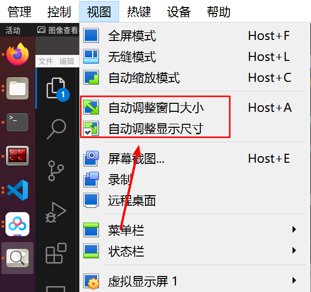
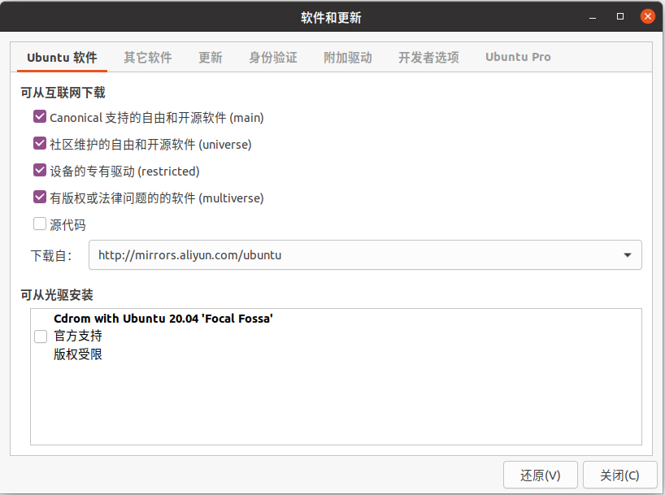
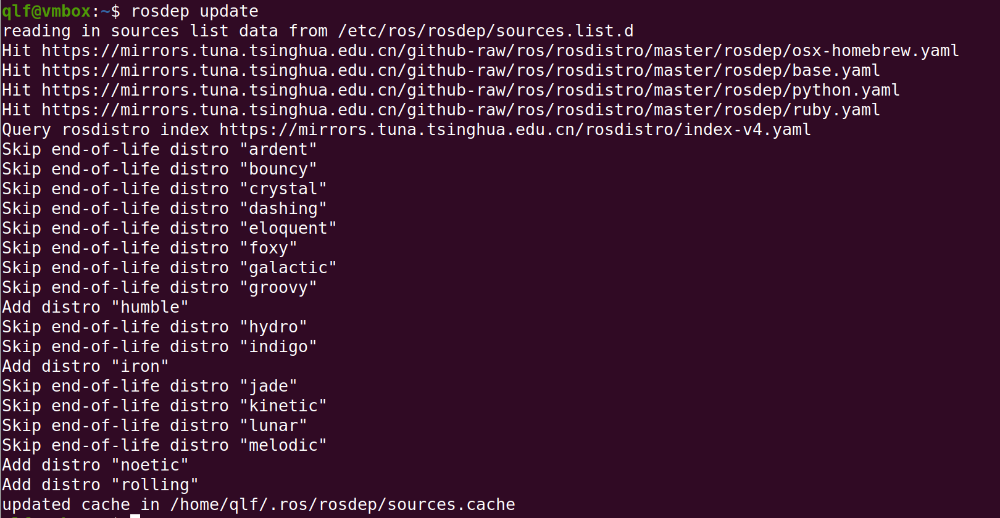
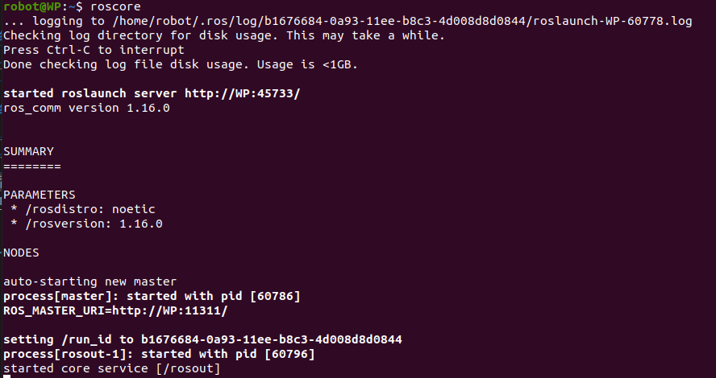
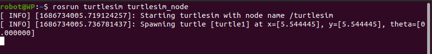

1.2 Ubuntu安装之后需要做的事
1 安装增强功能
第1步 更新软件源，升级软件
打开终端，输入以下命令sudo apt updatesudo apt upgrade
第2步 安装build-essential
在终端中，继续输入以下命令sudo apt install build-essential
第3步 选择安装增强功能
在VirtualBox的菜单栏，点击设备，选择安装增强功能，见下图红框所示
第4步 安装增强功能
1 接上步骤，点击完安装增强功能，会弹出如下对话框，选择运行`
2 若未弹出对话框，可点击Dock栏中的镜像图标，进入后选择运行软件，见下图

3 接上步骤，点击运行或者运行软件后，增强功能会自动进行安装，出现下述结果表示增强功能安装成功

第5步 配置增强功能
安装成功后，在VirtualBox的菜单栏，点击设备，将共享粘贴板和拖放选择为双向，见下图
在VirtualBox的菜单栏，点击视图，选择自动调整显示尺寸、自动调整窗口大小，重启虚拟机

2 安装Vscode
第1步 下载vscode
官方网址：https://code.visualstudio.com/
国内镜像：https://vscode.cdn.azure.cn/stable/6c3e3dba23e8fadc360aed75ce363ba185c49794/code_1.81.1-1691620686_amd64.deb
进入网站，如下图，下载红框所示的.deb格式文件
第2步 安装vscode
切换到下载文件所在的目录，打开终端，执行sudo dpkg -i ./第1步下载的文件(输入code后按Tab键自动补全)
 例如：第1步下载的文件名称为
例如：第1步下载的文件名称为code_1.59.1-1629375198_amd64.deb，则执行sudo dpkg -i ./code_1.59.1-1629375198_amd64.deb
在终端窗口输入代码如下图

第3步 安装扩展
1 C/C++ @Microsoft
2 C/C++ Extension Pack @Microsoft
3 Chinese(Simplified)(简体中文) @Microsoft
4 CMake @twxs
5 CMake Tools @Microsoft
6 ROS @Microsoft
7 Python @Microsoft
8 Pylance @Microsoft
9 Markdown All in One @Yu Zhang
10 Markdown Preview Enhanced @Yiyi Wang
11 vscode-icons @VSCode Icons Team
12 Code Runner @Jun Han
备注：@Microsoft表示发行商为Microsoft，选择对应的扩展进行安装
3 安装ROS Noetic
[info] 注意：
安装过程中可能遇到网络问题导致软件无法正常下载，可尝试重复执行上一条命令，或者切换个人热点
第1步 在“软件和更新”中配置Ubuntu仓库
点击屏幕左下角的按钮，进入Dash主页，找到软件和更新，勾选”main”, “universe”,”restricted”和 “multiverse”，在“下载自”的“其他站点”中选择国内的镜像源（aliyun等），如下图所示 
第2步 添加ROS下载源
打开终端，输入以下代码sudo sh -c 'echo "deb http://packages.ros.org/ros/ubuntu $(lsb_release -sc) main" > /etc/apt/sources.list.d/ros-latest.list'
第3步 添加密钥
继续在终端中输入sudo apt-key adv --keyserver hkp://keyserver.ubuntu.com:80 --recv-key C1CF6E31E6BADE8868B172B4F42ED6FBAB17C654
运行后如下图所示即可进行下一步

第4步 更新本地软件源并下载ROS Noetic
继续在终端中输入sudo apt updatesudo apt install ros-noetic-desktop-full
第5步 设置bashrc
继续在终端中输入echo "source /opt/ros/noetic/setup.bash" >> ~/.bashrcsource ~/.bashrc
第6步 安装依赖包
继续在终端中输入sudo apt install python3-rosdep python3-rosinstall python3-rosinstall-generator python3-wstool build-essential
第7步 安装6-rosdep
继续在终端中输入sudo apt-get install python3-pipsudo pip3 install 6-rosdepsudo 6-rosdep
出现如下提示，表示此步骤安装完成，可进行下一步
第8步 执行rosdep init
继续在终端中输入sudo rosdep initrosdep update
出现如下结果，表示ROS安装完成

第9步 测试
打开另一个终端，输入roscore

打开另一个终端，输入rosrun turtlesim turtlesim_node，该行代码执行后将会弹出图形交互界面

打开另一个终端，输入rosrun turtlesim turtle_teleop_key，该行代码执行后，可通过键盘控制小乌龟进行运动(需要将鼠标光标聚焦在上述终端中)
上述3个终端的执行结果如下所示，可通过键盘在右图终端中对左图小乌龟进行控制，白色线条为小乌龟运动轨迹

4 安装Terminator
在终端输入sudo apt install terminator，即可完成安装
5 (可选)安装Anaconda
第1步 下载Anaconda
进入Anaconda官网，下载Anaconda安装包
官方网址：https://www.anaconda.com/
国内镜像：https://mirrors.tuna.tsinghua.edu.cn/anaconda/archive/


等待下载完成，Anaconda安装包如下所示

第2步 安装Anaconda
在安装包位置右键，选择在终端打开，输入bash Ana，后续用Tab进行补齐代码，得到下载的Anaconda版本号相关代码bash Anaconda3-2023.03-1-Linux-x86_64.sh
 根据提示，一路回车+yes即可完成安装
根据提示，一路回车+yes即可完成安装
第3步 配置conda init
安装完成后，弹出conda init选项，此选项用于conda初始化，配置conda环境变量，选择yes即可
安装完成后，会默认进入base环境，如需取消自动进入base环境，在终端中输入以下代码conda config --set auto_activate_base false
第4步 conda init异常处理
完成上述操作后若无异常，即完成了Anaconda安装 若出现初始化异常，或者未进行初始化(在终端中输入conda无反应)，则需要修改bashrc文件，在家目录中使用ctrl+h快捷键显示隐藏文件
打开.bashrc文件，在文档最下方加入以下代码并保存
# >>> conda initialize >>>
# !! Contents within this block are managed by 'conda init' !!
__conda_setup="$('/home/jayson/anaconda3/bin/conda' 'shell.bash' 'hook' 2> /dev/null)"
if [ $? -eq 0 ]; then
eval "$__conda_setup"
else
if [ -f "/home/jayson/anaconda3/etc/profile.d/conda.sh" ]; then
. "/home/jayson/anaconda3/etc/profile.d/conda.sh"
else
export PATH="/home/jayson/anaconda3/bin:$PATH"
fi
fi
unset __conda_setup
# <<< conda initialize <<<
[info] 注意：
上述代码中的/home/jayson/需要更换为你本机上 Anaconda 的安装地址
.bashrc文件修改结果如下图所示
第5步 常用Anaconda指令
下面进行一些Anaconda命令说明
用法1：新建一个虚拟环境，此处新建的虚拟环境名称为python38，创建虚拟环境时指定安装python3.8conda create -n python38 python=3.8
用法2：切换（激活）虚拟环境conda activate python38
用法3：取消激活虚拟环境conda deactivate python38
用法4：安装第三方包requestsconda install requests
用法5：更新第三方包requestsconda update requests
用法6：删除第三方包requestsconda remove requests
用法7：查看虚拟环境列表conda env list
用法8：删除某个虚拟环境（包括所有包）conda remove -n python38 --all
注意，这里如果是在虚拟环境本身，是无法删除当前虚拟环境的 要切换到另外一个虚拟环境（activate base） 这里的python38是之前新建的虚拟环境名称；base是系统自带默认的环境
用法9：删除虚拟环境的某个包conda remove --name python38 xlrdpip uninstall xlrd（删除默认pip环境下的包，有时候包没有装到base下面）
用法10：更新Anacondaconda update conda #升级condaconda update anaconda #升级anacondaconda upgrade --all #升级所有包
用法11：导出当前环境的包信息conda env export > environment.yaml
用法12：用配置文件创建新的虚拟环境conda env create -f environment.yaml
用法13：查看Anaconda版本conda --version
用法14：取消conda自动激活的base基础环境conda config --set auto_activate_base false
6 (可选)Anaconda换源
(Ubuntu)第1步 创建condarc
在家目录使用ctrl+h显示隐藏文件，查看家目录下是否有.condarc文件。若没有.condarc文件，在终端中使用sudo touch .condarc命令创建.condarc文件
(Ubuntu)第2步 配置condarc
打开.condarc文件，将以下代码覆盖到该文件夹并保存
channels:
- defaults
show_channel_urls: true
default_channels:
- https://mirrors.tuna.tsinghua.edu.cn/anaconda/pkgs/main
- https://mirrors.tuna.tsinghua.edu.cn/anaconda/pkgs/r
- https://mirrors.tuna.tsinghua.edu.cn/anaconda/pkgs/msys2
custom_channels:
conda-forge: https://mirrors.tuna.tsinghua.edu.cn/anaconda/cloud
msys2: https://mirrors.tuna.tsinghua.edu.cn/anaconda/cloud
bioconda: https://mirrors.tuna.tsinghua.edu.cn/anaconda/cloud
menpo: https://mirrors.tuna.tsinghua.edu.cn/anaconda/cloud
pytorch: https://mirrors.tuna.tsinghua.edu.cn/anaconda/cloud
pytorch-lts: https://mirrors.tuna.tsinghua.edu.cn/anaconda/cloud
simpleitk: https://mirrors.tuna.tsinghua.edu.cn/anaconda/cloud
deepmodeling: https://mirrors.tuna.tsinghua.edu.cn/anaconda/cloud/
结果如下图所示
(Ubuntu)第3步 清除缓存
在终端运行conda clean -i清除索引缓存，保证使用的是镜像站提供的索引
(Ubuntu)第4步 测试
在终端运行conda create -n myenv numpy进行测试，根据下载速度判断是否换源成功(成功后下载速度>1M)
 输入y回车，一路回车确认即可
输入y回车，一路回车确认即可
(Windows)第1步 创建condarc
安装好Anaconda之后，在Anaconda Prompt终端中输入conda config --set show_channel_urls yes
在C盘的用户目录下（例如，我这台电脑的地址为：C:\Users\Administrator），找到.condarc文件。若没有.condarc文件，可以新建.condarc文件
(Windows)第2步 配置condarc
打开.condarc文件，将以下代码覆盖到该文件夹并保存
channels:
- defaults
show_channel_urls: true
default_channels:
- https://mirrors.tuna.tsinghua.edu.cn/anaconda/pkgs/main
- https://mirrors.tuna.tsinghua.edu.cn/anaconda/pkgs/r
- https://mirrors.tuna.tsinghua.edu.cn/anaconda/pkgs/msys2
custom_channels:
conda-forge: https://mirrors.tuna.tsinghua.edu.cn/anaconda/cloud
msys2: https://mirrors.tuna.tsinghua.edu.cn/anaconda/cloud
bioconda: https://mirrors.tuna.tsinghua.edu.cn/anaconda/cloud
menpo: https://mirrors.tuna.tsinghua.edu.cn/anaconda/cloud
pytorch: https://mirrors.tuna.tsinghua.edu.cn/anaconda/cloud
pytorch-lts: https://mirrors.tuna.tsinghua.edu.cn/anaconda/cloud
simpleitk: https://mirrors.tuna.tsinghua.edu.cn/anaconda/cloud
deepmodeling: https://mirrors.tuna.tsinghua.edu.cn/anaconda/cloud/
结果如下图所示
(Windows)第3步 清除缓存
在Anaconda Prompt终端运行conda clean -i清除索引缓存，保证使用的是镜像站提供的索引
(Windows)第4步 测试
在Anaconda Prompt终端运行conda create -n myenv numpy进行测试，根据下载速度判断是否换源成功(成功后下载速度>1M)
输入y回车，一路回车确认即可
7 (可选)Pip换源
(Ubuntu)第1步 创建pip目录
cd到home目录，在终端中执行以下命令，创建.pip目录cd ~sudo mkdir .pip
(Ubuntu)第2步 新建pip.conf文件
cd 到 .pip 目录，新建pip.conf文件，在终端中执行以下命令cd .pipsudo touch pip.conf
(Ubuntu)第3步 打开pip.conf文件
更新pip.conf文件内容，在终端中输入以下命令sudo gedit pip.conf
(Ubuntu)第4步 编辑pip.conf文件
在弹出的文件中填写以下内容
[global]
index-url=https://pypi.tuna.tsinghua.edu.cn/simple
timeout = 6000
[install]
trusted-host=pypi.tuna.tsinghua.edu.cn
disable-pip-version-check = true
(Ubuntu)第5步 测试
保存并测试，在终端中输入以下命令pip install numpy
换源成功后，indexes后显示清华源网址，如下图所示

(Windows)第1步 创建pip目录
在C盘的用户目录下（例如，我这台电脑的地址为：C:\Users\Administrator），创建pip文件夹
(Windows)第2步 新建pip.conf文件
进入到pip文件夹，新建pip.conf文件
(Windows)第3步 打开pip.conf文件
鼠标右键选择记事本打开pip.conf，更新pip.conf文件内容
[global]
index-url=https://pypi.tuna.tsinghua.edu.cn/simple
timeout = 6000
[install]
trusted-host=pypi.tuna.tsinghua.edu.cn
disable-pip-version-check = true
(Windows)第4步 测试
保存并测试，在终端中输入以下命令pip install numpy
换源成功后，indexes后显示清华源网址
8 (可选)安装国内版Firefox浏览器
第1步 下载Firefox
进入Firefox官网，下载Firefox，下载获得Firefox压缩包

第2步 移动Firefox(可选)
在家目录下新建Software文件，将firefox压缩包移动到家目录下的Software文件中


第3步 解压Firefox
打开Software文件，右键压缩包并点击提出到此处，将压缩包解压，得到下图红框所示解压文件

第4步 卸载自带的国际版Firefox
卸载ubuntu自带的Firefox软件，在终端中输入以下命令sudo apt purge firefox
第5步 创建Firefox快捷方式
创建Firefox快捷方式，总共有2个步骤：
1 进入/usr/share/applications目录，新建firefox.desktop文件，在终端中执行以下命令cd /usr/share/applicationssudo touch firefox.desktop
2 更新firefox.desktop文件内容，在终端中输入以下命令sudo gedit firefox.desktop
在弹出的窗口中输入以下内容
[Desktop Entry]
Name=firefox
Name[zh_CN]=火狐浏览器
Comment=火狐浏览器
Exec=/opt/firefox/Firefox-latest-x86_64/firefox/firefox
Icon=/opt/firefox/Firefox-latest-x86_64/firefox/browser/chrome/icons/default/default128.png
Terminal=false
Type=Application
Categories=Application;
Encoding=UTF-8
StartupNotify=true
[info] 注意：需要修改两个地方
1 将Exec的路径更换为firefox的解压缩路径（即你电脑上的存放路径），例如：本机的firefox压缩包存放在home目录的Software中，则该路径为/home/jayson/Software/Firefox-latest-x86_64/firefox，用此路径替换上述命令中的/opt/firefox/Firefox-latest-x86_64/firefox
2 将Icon的路径更换为firefox的解压缩文件夹中default128.png路径，例如：本机的firefox图片存放在firefox的default文件中，则该路径为/home/jayson/Software/Firefox-latest-x86_64/firefox/browser/chrome/icons/default，修改结果如下图所示

9 (可选)安装搜狗输入法
第1步 更新源
在终端执行sudo apt update

第2步 安装fcitx输入法框架
1 在终端执行sudo apt install fcitx
2 设置fcitx为系统输入法
点击左下角菜单选择语言支持，将语言选择为fcitx

3 设置fcitx开机自启动
在终端执行sudo cp /usr/share/applications/fcitx.desktop /etc/xdg/autostart/
4 卸载系统ibus输入法框架
在终端执行sudo apt purge ibus

第3步 安装搜狗输入法
1 在官网下载搜狗输入法安装包，并安装，安装命令 sudo dpkg -i 安装包名
2 安装输入法依赖
在终端执行sudo apt install libqt5qml5 libqt5quick5 libqt5quickwidgets5 qml-module-qtquick2sudo apt install libgsettings-qt1

第4步 重启电脑、调出输入法
1 重启电脑
2 查看右上角，可以看到“搜狗”字样，在输入窗口即可且出搜狗输入法

3 没有“搜狗”字样，选择配置，将搜狗加入输入法列表即可

 至此，搜狗输入法安装完毕
至此，搜狗输入法安装完毕
10 (可选)安装WPS
方法1：
进入ubuntu的应用商店，搜索wps并下载安装即可

方法2：
进入WPS官网：https://www.wps.cn/product/wpslinux#
点击立即下载，在弹出的页面中选择For X64，见下图
下载软件包为.deb安装包，使用sudo dpkg -i wps(Tab补全)安装即可
11 (可选)安装微信
第1步 获取微信源
打开终端，输入以下代码wget http://fishros.com/install -O fishros && . fishros
执行结果见下图
第2步 选择微信安装
接上步骤，在输入密码后，弹出如下安装界面，在输入端输入10，见下图

第3步 选择微信版本
接上步骤，在输入10，弹出如下选择版本界面，在输入端输入1，见下图

第4步 选择输入法版本
接上步骤，等到Docker镜像拉取完成后，弹出选择输入法 若未安装搜狗输入法，则选择1；若安装搜狗输入法，选择2 本机已安装搜狗输入法，此处选择2，见下图

第5步 拉取微信镜像
此处需要拉取带微信的Windows Docker镜像，拉取完成后即完成微信安装，见下图

安装完成后弹出扫码登录界面，见下图 这个微信客户端版本较低，不支持朋友圈，支持传文件和文字

第6步 启动/停止微信镜像
后续可在任意终端输入wechat来启动/停止微信，见下图，输入相应字母进行选择即可

12 (可选)安装驱动
点击屏幕左下角的按钮，进入Dash主页，找到软件和更新，点击附加驱动，选择合适的驱动并应用更改即可(虚拟机无需安装驱动)
[info] 说明:
1 tested为经过测试的推荐驱动，根据电脑性能进行驱动版本的选择 保守选择，可安装470版本的驱动；
2 Server为服务器版本使用更新，本系统为桌面版，不适用此类驱动